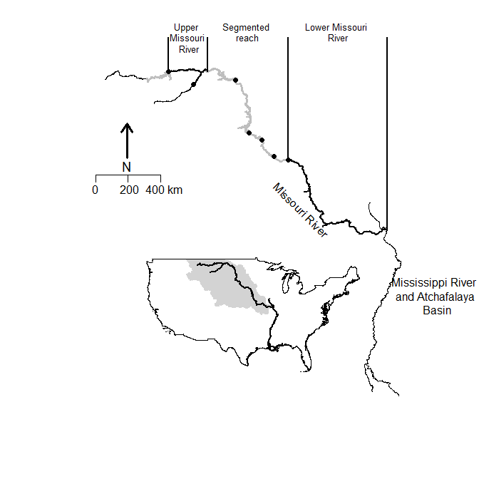

PSPAP Reboot
Michael E. Colvin
2016-11-22
1 Missouri River pallid sturgeon declines and recovery program
1.1 About the PSPAP
The Pallid Sturgeon Population Assessment Program (PSAPS) began in 2003. Current population assessment overview Background and implementation Began 2003 Ramped up in xxx The Pallid Sturgeon
1.2 Spatial extent and grain
Missouri River pallid sturgeon recovery is limited to the upper and lower Missouri River segments (Figure 1.1). The upper and lower Missouri River segments are xx km and xx km respectively (Table 1.1).
Segments within RPMAs (Table 1.1)
Bends within segments
River bends, defined as xxx xxxx are defined as the sampling unit within each major segment. Within each segment, 25% of bends are randomly sampled annually. It is unclear whether a bend can be resampled the following year

Figure 1.1. Major Missouri River pallid sturgeon management units. The Pallid Sturgeon Population Assessment Program is implemented in the upper, segmented, and lower Missouri River.
Figure 1.2. Upper and lower Missouri River segments establishing the spatial extent of Missouri River pallid sturgeon recovery. Alternating gray and black line segments denote river bends that serve as the spatial grain and sampling unit for population and demographic estimates.
Table 1.1.
| RPMA (rkm start, stop) | Segment (rkm start,stop) | Bends |
|---|---|---|
| 1 | ||
| 2 | ||
Existing evaluations Other considerations Length, weight, Current assessment and AM The objectives are:
Fundamental Objective: Avoid jeopardizing the continued existence of the pallid sturgeon from the US Army Corps of Engineers actions on the Missouri River.
Sub-objective 1: Increase pallid sturgeon recruitment to age 1.
- Metrics: primary metric is catch rates of age 0 and age 1 pallid sturgeon;
- secondary metrics include model-based estimates of abundance of age 0 and age 1 pallid sturgeon, and the survival of hatchery and naturally reproducing fish to age 1.
Sub-objective 2: Maintain or increase numbers of pallid sturgeon as an interim measure until sufficient and sustained natural recruitment occurs.
Study objectives Pallid Sturgeon only…
The objectives of this study are to:
- provide potential approaches that will meet population objective
- feed into ongoing adaptive management
- build on or cross walk
1.3 Marked populations
Abundance
Site-level
- How many replicates are needed to estimate abundance reliably? What is reliable?
- Constant p
- Heterogeneous capture probability
- Some movement in and out
- Benefit of using tagged critters?
Segment-level
- Estimates from 25% of bends in segment per year?
- Dependent on bend size
- Relate to density?
- Consequences of some movement?
Survival
- Robust design
- M0- varies by bend \(\text{logit}(p)={{\beta }_{0}}+{{\beta }_{1}}\cdot Bend\)
- Mt – varies by bend and secondary occasion \(\text{logit}(p)={{\beta }_{0}}+{{\beta }_{1}}\cdot Bend+{{\beta }_{2}}\cdot Occasion+{{\beta }_{3}}\cdot Bend\cdot Occasion\)
- Constant phi within segment, varies among years
- \(\operatorname{logit}(\phi )={{\beta }_{0}}+{{\epsilon }_{year}}\) where \({{\epsilon }_{year}}\tilde{\ }N(0,\sigma )\)
- Robust design with telemetry
- In segment (perfect detection, imperfect detection)
- River sweep (perfect detection, imperfect detection)
- \(\operatorname{logit}(\phi )={{\beta }_{0}}+{{\epsilon }_{year}}\) where \({{\epsilon }_{year}}\tilde{\ }N(0,\sigma )\)
- \({{Z}_{track,segement,year}}\tilde{\ }binomial({{\phi }_{segment,year}})\)
- River sweep to inform \(\phi\), $$, and \(\gamma\prime\prime\)from tracking tags
- Do fish move large distances outside of migrations? What is the optimal time to do capture-recapture? Options: none, some, a lot.
- What is better to estimate as a random subset of bends or randomly tag a bunch of fish and recapture in random bends?
| Option | Model | \(N_{true}\) | N Bends | Occasions |
|---|---|---|---|---|
| V01 | \(p{{(.)}_{bend}}\) | 5000 | 5,7,10,15,20,25,30,35,40,50,75,100 | 4 to 10 by 1 |
BUGS model to estimate close population
`mod<- function() { for(i in 1:M) { z[i]~dbin(omega,1) # LATENT VARIABLE, DATA AUGMENTATION for(j in 1:T) { p_eff[i,j]<- z[i]*p_cap # CONDITIONAL SPECIFICATION obs[i,j]~dbern(p_eff[i,j])
}#i }#j # DERIVED PARAMETERS N<-sum(z[])
# PRIORS
omega~dunif(0,1)
p_cap~dunif(0,1)
}`K160: Korman, J., J. Schick, and B. Mossop. 2016. Estimating Riverwide Abundance of Juvenile Fish Populations: How Much Sampling is Enough? North American Journal of Fisheries Management 36:213-229.
Robust design PSPAP PSPAP + telemetry PSPAP + river sweep PSPAP + telemetry + river sweep
Robust design Random reaches Random reaches + telemetry Random reaches + river sweep Random reaches + telemetry + river sweep